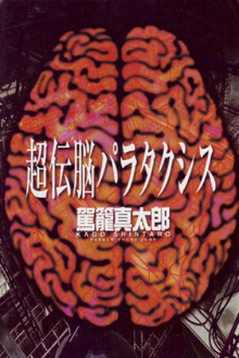

¿Tomie De Que Trata?
trata sobre una misteriosa y seductora joven llamada Tomie Kawakami, quien posee la habilidad de regenerarse infinitamente y de manipular a otros, especialmente a los hombres, para que se enamoren de ella y se obsesionen hasta la locura.
¿Uzumaki De Que Trata?
una pequeña ciudad costera japonesa llamada Kurouzu-cho, que se ve afectada por una maldición sobrenatural relacionada con espirales.
¿Junji Ito De Que Trata?
trata sobre las maldiciones y travesuras de Soichi Tsujii, un niño con un extraño gusto por los clavos y la magia negra.

¿Pumpkin Night De Que Trata?
Naoko Kirino, una joven que sufrió bullying extremo en la escuela secundaria. Su sufrimiento la llevó a un colapso mental que terminó con su ingreso en un hospital psiquiátrico

¿KILLING MORPH De Que Trata?
La historia gira en torno a Mika, una joven estudiante común cuya vida da un giro aterrador cuando presencia una masacre cometida por una figura misteriosa: una mujer enmascarada con un traje negro y una sonrisa espeluznante, conocida como Killing Morph.
¿Hellsing: The Dawn De Que Trata?
Mientras Hellsing se centra en los eventos contemporáneos de la organización Hellsing y su lucha contra lo sobrenatural, The Dawn retrocede décadas en el tiempo para explorar los orígenes de los personajes principales y su papel durante la Segunda Guerra Mundial.
¿Freak Island De Que Trata?
Un grupo de seis estudiantes universitarios, miembros de un club de arqueología, parte hacia la isla desierta de Kikuchi en un barco. Esperan encontrar ruinas antiguas, pero en su lugar dan con una pesadilla
¿Drifters De Que Trata?
Shimazu Toyohisa, samurái herido en la Batalla de Sekigahara (1600), es transportado tras la muerte a un mundo desconocido a través de un misterioso pasillo con puertas. Allí descubre que no está solo
¿Hellsing De Que Trata?
La historia sigue a la Organización Hellsing, una institución británica secreta encargada de proteger a Inglaterra de amenazas sobrenaturales, especialmente vampiros y otras criaturas no muertas
¿Berser De Que Trata?
Guts, apodado "El Guerrero Negro", es un mercenario solitario con una gigantesca espada, que vaga por un mundo medieval lleno de demonios, guerra, traición y sangre
¿Ajin De Que Trata?
Kei Nagai, un estudiante normal, descubre que es un Ajin cuando muere en un accidente de tráfico… y revive inmediatamente
¿Hakaijuu De Que Trata?
Hakaijuu es una lectura imprescindible si te atraen historias donde la supervivencia se mezcla con el terror y la violencia: monstruos gigantes, estructuras colapsadas y personajes que luchan contra las criaturas y contra sí mismos.
¿Gantz De Que Trata?
los protagonistas, Kei Kurono y Masaru Kato, mueren atropellados en un tren al intentar salvar a un desconocido. Luego despiertan en una habitación con otras personas fallecidas y delante de una esfera negra llamada Gantz

¿Dead Tube De Que Trata?
Tomohiro Machiya, miembro del club de grabación escolar, es convocado por la popular Mai Mashiro para filmarla durante dos días.
¿Gyo: The Death-Stench Creeps De Que Trata?
"Gyo" gira en torno a una invasión de peces con patas metálicas que emergen del mar en Japón, trayendo consigo un olor putrefacto y una niebla tóxica.
¿Buta no Fukushuu De Que Trata?
Ideal para lectores que buscan una historia intensa de venganza, con un protagonista que rompe su victimismo y se convierte en un caudillo implacable frente a sus agresores, todo en un mundo de fantasía cruel y sin filtros morales.
¿El Enjambre De Su Majestad De Que Trata?
El manga narra la reencarnación de una joven fangirl de RTS (juego de estrategia en tiempo real). Despierta en otro mundo, en el cuerpo de una niña de unos 14 años, siendo reconocida como “Su Majestad” por una facción de arácnidos llamada Arachnea, controlados por una mente colmena .
¿Offal Island De Que Trata?
La historia sigue a Alice, una modelo de ascendencia mixta que acepta una sesión de fotos en una isla remota y perturbadora.
¿Hideout De Que Trata?
Seiichi Kirishima, un escritor frustrado que acaba de perder su contrato y su hijo, lleva a su esposa Miki a una isla remota bajo una tormenta intensa, planeando matarla para recomenzar su vida

¿Super-Conductive Brains De Que Trata?
n un futuro lejano, la humanidad ha sido reemplazada por una civilización diminuta que ha clonado a gigantes humanoides (llamados Surdlers) para utilizarlos como máquinas vivientes: transporte, construcción, herramientas de guerra, etc. Estos seres son tratados como simples objetos —descartados, destripados y recompuestos— sin consideración por su humanidad aparente